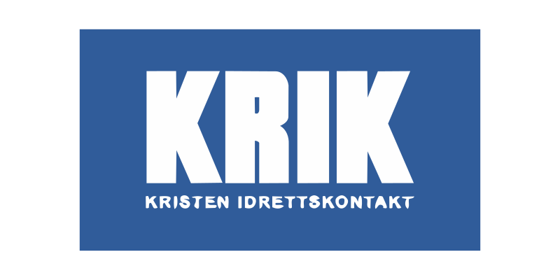

Beste lagfeiring
Mer enn tre spillere må delta. Vis glede sammen og respekt for motlaget.

Laster turneringen …
Lørdag 10. oktober i Stjørdal
| # | Lag | K | S | U | T | Mål | MF | Poeng |
|---|
Sveip tabellen sideveis for seier, uavgjort, tap og mål.
Prisene deles ut fem minutter etter finalen — kl. 14.15.
Mer enn tre spillere må delta. Vis glede sammen og respekt for motlaget.
Turneringens flotteste scoring.
For innsatsen mellom stengene.
Turneringens vinnere.
Finalistene.
Vinnerne av bronsekampen.
Ti lag spiller et fast kampoppsett over ni runder. Hvert lag spiller seks kamper. Ingen spiller mer enn to kamper på rad. Seier gir 2 poeng, uavgjort gir 1 poeng og tap gir 0 poeng. Står lag likt, skiller vi på målforskjell, deretter scorede mål og til slutt innbyrdes oppgjør. Er lagene fortsatt helt like, avgjøres det ved trekning.
Etter niende runde låses sluttspilloppsettet når alle 30 seriekamper er avsluttet. 1. mot 2. plass spiller finale på bane 1; resten spiller plasseringskamper mot tabellnaboen.
Hver runde er 20 minutter: 15 minutter kamp og 5 minutters pause før neste avspark. Etter niende runde er pausen 10 minutter før sluttspillet starter. Turneringen går kontinuerlig uten matpause, så spis gjerne sammen med laget mellom kampene. Finalen går 13.55–14.10 på bane 1, og premieutdeling starter 14.15.
Laget som står øverst i kampoppsettet er hjemmelaget, og det er hjemmelaget som tar på seg vestene. Etter hver kamp henger dere vestene i målet, så står de klare til neste kamp på banen.
Går ballen ut over sidelinjen, tar vi innkast. Vi bruker ikke innspark i denne turneringen.
Lagnavnene er hentet fra det fonetiske alfabetet, og du finner de ti første ordene der: Alpha, Bravo, Charlie, Delta, Echo, Foxtrot, Golf, Hotel, India og Juliett.
Dommerne nominerer fra «Dommermodus» under Kamper. Her ser alle admin-er hvem som er foreslått til hver pris, og hvorfor. Glemte du å nominere under kampen, kan du legge det til her.
15 minutter er spilt. Blås av og trykk «Avslutt kampen».